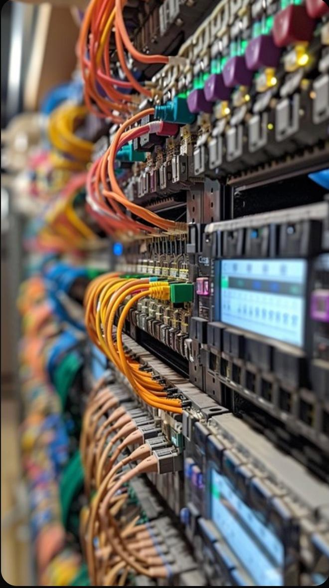

Homelab opzetten
Een thuis-netwerk met eigen server en virtuele machines opgezet.
Linux, Proxmox, netwerken
Bekijk project →Een overzicht van mijn projecten en wat ik heb geleerd.

Een thuis-netwerk met eigen server en virtuele machines opgezet.
Linux, Proxmox, netwerken
Bekijk project →Zelf een pc samengesteld van losse onderdelen en geconfigureerd.
Hardware, Windows, BIOS
Bekijk project →De Linux command line geleerd voor systeembeheer en automatisering.
Linux, Bash, Shell
Bekijk project →Een kleinschalig netwerk opgezet met VLAN's, routing en DHCP.
Cisco, VLAN, routing
Bekijk project →Een pfSense-firewall geconfigureerd om het thuisnetwerk te beveiligen.
pfSense, beveiliging, firewall
Bekijk project →Meerdere virtuele machines opgezet op Proxmox voor testen en leren.
Proxmox, VM's, virtualisatie
Bekijk project →